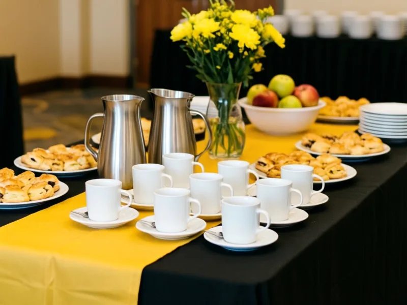

Samedi 14 juin · Exempleville
Une journée de conférences et d'ateliers pour celles et ceux qui construisent le web. Huit conférences, trois ateliers, une salle.
Ouverture des portes à 9h00. Le déjeuner et le café sont compris.
Des noms d'exemple, tous : les vôtres viennent ici.
Animatrice de la journée
Des sites qui durent
Les petites équipes
Atelier : accessibilité
Atelier : tests
Performance
La Salle Exemple
Rue de l'Exemple 12, 0000 Exempleville, Belgique
À dix minutes à pied de la gare d'Exempleville.
Un parking gratuit derrière la salle.
De plain-pied de la rue jusqu'aux sièges. Dites-nous ce dont vous avez besoin.

Le déjeuner, le café et le verre de clôture sont compris dans chaque billet.
Oui, jusqu'à deux semaines avant le jour. Ensuite, vous pouvez donner votre billet à quelqu'un d'autre.
En anglais. Les ateliers sont en anglais et en français.
Oui. Les enregistrements sont envoyés à toutes les personnes qui ont un billet.
Deux cents places, et pas une de plus.